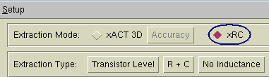
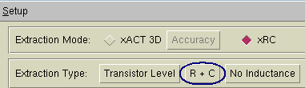
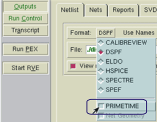

This
procedure specifies the settings particular to creating a PrimeTime
netlist from Calibre Interactive.
Procedure
- Start the PEX interface in
Calibre Interactive.
- Load a runset or rulefile.
- Specify the extraction mode.
Click the Outputs button in the left
pane. Set Extraction Mode to xRC.
Figure 1. xRC Extraction Mode Setting
- Specify the extraction type.
In the area above the tabs,
set Extraction Type to R + C.
Figure 2. R + C Mode Setting
- Select the Netlist tab, and set the format
to DSPF or SPEF. The PRIMETIME item is only
available for those netlist formats.
- Select the format menu again
and set the PRIMETIME option.
Figure 3. PrimeTime Output Setting
- Set other controls as needed.
When ready, click the Run PEX button
in the left pane.
Results
Check the Transcripts pane to verify
the run completed with no errors. If you have selected “View netlist
after PEX finishes” in the Outputs pane, a text viewer appears with
the generated netlist loaded.